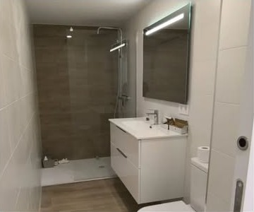
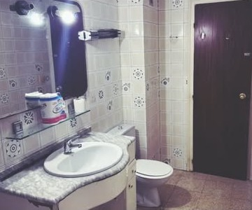

AntesDespués← Arrastra para comparar →
Proyecto 01
Baño completo
Azulejo de hace décadas, bañera y una encimera que ya no daba más de sí. Lo vaciamos entero y montamos un baño claro, con ducha a ras de suelo y almacenaje suspendido.
- TrabajoReforma completa de baño
- IncluyeFontanería, alicatado, suelo y luz
- Cambio claveBañera por plato de ducha